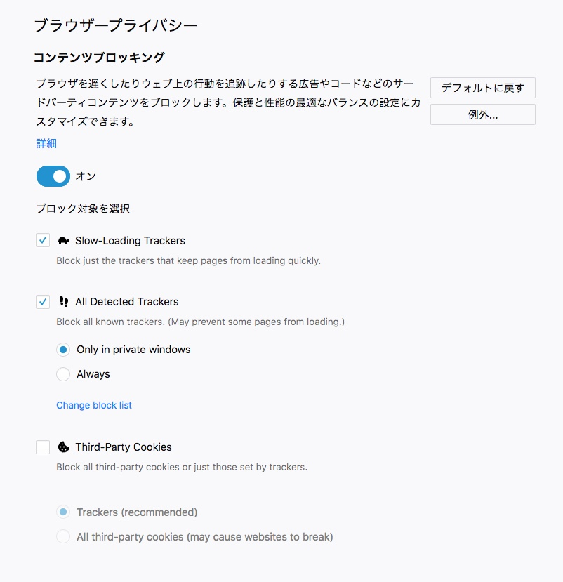
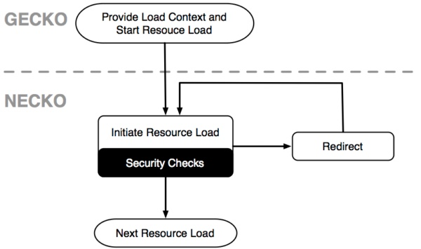

autoscale: true
Firefoxのトラッキングブロックについて
自己紹介

- Name : azu
- Twitter : @azu_re
- Website: Web scratch, JSer.info
Firefoxのトラッキングブロックについて
- 今日の情報は2018-09-10書かれたものです。
- 最新の内容は以下を参照してください
- Mozilla Security Blog
- Security/Tracking protection - MozillaWiki
Anti-tracking
- FirefoxがAnti-trackingな実装を始めた
- 将来的にデフォルトでトラッカーをブロックしたいという方針を掲げた
- Changing Our Approach to Anti-tracking - Future Releases
Anti-tracking
- Improve page load performance
- SHIELD Studiesの一環としてFastBlockをテストする
- Remove Cross-site tracking
- トラッキングクッキー
- localStorageへのアクセスを防止する
Why
- Why we need better tracking protection | Mozilla Security Blog
- 人々はウェブ上でトラッキングによってデータ収集されるの対して不快感がある
- Opt-inのDNTはサイトが無視するため不十分
- また過去の研究から
- DNTを理解している人は少ない
- デフォルト設定を変更する人は少ない
- トラッキングの高度化
- クッキー以外の方法でもトラッキングがおこなわれるようになった
- evercookie、cookie syncingなど
- => ユーザーが選択ではなく、デフォルト値を変更することにした
仮説と目的
- FastBlock - PHD - Google ドキュメント
- TB(Tracking Block)についての仮説
- TBはFirefoxの"Speed"にプラスの影響を与える可能性がある
- TBはページロードのパフォーマンスを改善する可能性がある
- TBはページの破損(breakage)といった悪影響を及ぼさないだろう
- まとめ: Improve speed without breakage
Slow Tracking Script
- ウェブサイトの合計ロード時間の55.4%がサードパーティトラッカーによって行われている
- (合計なので、表示にかかるロード時間が50%という意味ではなくその後なども含んでいる)
- Ghostery Tracker Tax Report Shows How Fast the Web Could Be | Digital Trends
- 今は更に増えてる The Tracker Tax - Ghostery
- Fast Blockは遅い(5秒以上ロードにかかる)トラッキングスクリプトをブロックする
Firefox Nightly

- [x] Fast Block
- ルールベースのブロッキング(disconnectの2種類のルール)
- [x] Private mode
- [ ] デフォルト
- [ ] サードパーティトラッキングCookieのブロック
ファーストパーティCookie(Same-site cookie)
- 見ているドメインと同じドメインに紐づくもの
サードパーティCookie
- 見ているドメインとは異なるドメインに紐づくもの
トラッキング
トラッキング (行動追跡) は一般的に、ユーザーの複数のサイトにまたがる閲覧データを収集することを指します。 -- https://support.mozilla.org/ja/kb/tracking-protection
- ただし動作については未定義
- Firefoxではサードパーティ + リストに入っているものをトラッキングスクリプトとして扱う
- Disconnectをベースにしたトラッキングリストを利用する
トラッカー
トラッキングをするもの
Firefoxの実装
Necko
Necko is a network library that provides a platform-independent API for several layers of networking, ranging from transport to presentation layers -- Necko - Mozilla | MDN
Necko
- FirefoxのネットワークにおけるセキュリティチェックはNecko(
network)で行われる - Geckoはレンダリング/レイアウトエンジン

"トラッキング"の判定
- Firefoxにおける"トラッキング"スクリプトとは何かを実装から見ていく
- コンテンツブロックで"トラッカー"をブロックするとあるが、何をブロックするのかは載ってない
- Security/Safe Browsing - MozillaWiki
- Safe Browsingなどを扱うURLClassifierあたりで実装されている
- ソースコードはhttps://dxr.mozilla.orgやmozilla/gecko-devを見る
git clone --depth 1 https://github.com/mozilla/gecko-dev.git- Nightly を使ってコントリビュートする - 開発ツール | MDN
- TrackingURICallback::OnClassifyComplete
- チェックを開始する
- トラッキングテーブルにマッチするURLなら
TrackingURICallback::OnBlacklistResultへ
if ((shouldEnableTrackingProtection && inTrackingTable) ||
(shouldEnableTrackingAnnotation && inAnnotationTable)) {
// Valid blacklist result, need to check the whitelist(s) next
return OnBlacklistResult(NS_ERROR_MAYBE_TRACKING_URI, inTrackingTable,
inAnnotationTable);
}
TrackingURICallback::OnBlacklistResult- blacklistにマッチしたら
- このうちwhitelistにマッチしない => tracking
- 次の2種類のURLがtrackingになっている
NS_ERROR_TRACKING_ANNOTATION_URINS_ERROR_TRACKING_URI
:memo: trackingの違い
NS_ERROR_TRACKING_URIテーブルに入ってる純粋なトラッカーNS_ERROR_TRACKING_ANNOTATION_URIテーブル外のトラッカー
// The lookup failed to match at least one of the active whitelists
// (tracking protection takes precedence over tracking annotations)
return OnWhitelistResult(isTracker ? NS_ERROR_TRACKING_URI :
NS_ERROR_TRACKING_ANNOTATION_URI);
- TrackingURICallback::OnTrackerFound
- HttpBaseChannel::SetIsTrackingResource
void
HttpBaseChannel::SetIsTrackingResource(bool aIsThirdParty)
{
LOG(("HttpBaseChannel::SetIsTrackingResource thirdparty=%d %p",
static_cast<int>(aIsThirdParty), this));
if (aIsThirdParty) {
MOZ_ASSERT(!mIsFirstPartyTrackingResource);
mIsThirdPartyTrackingResource = true;
} else {
MOZ_ASSERT(!mIsThirdPartyTrackingResource);
mIsFirstPartyTrackingResource = true;
}
if (mLoadInfo) {
MOZ_ALWAYS_SUCCEEDS(mLoadInfo->SetIsTracker(true));
}
}
トラッキング is
- TrackingResource は
(third party or first party) and リストマッチしたもの
NS_IMETHODIMP
HttpBaseChannel::GetIsTrackingResource(bool* aIsTrackingResource)
{
MOZ_ASSERT(!(mIsFirstPartyTrackingResource && mIsThirdPartyTrackingResource));
*aIsTrackingResource =
mIsThirdPartyTrackingResource || mIsFirstPartyTrackingResource;
return NS_OK;
}
サードパーティかどうか
- ThirdPartyUtil::IsThirdPartyInternal
- BaseDomain同士を一致するか比較するだけ
"www.bbc.co.uk"のBaseDomainは"bbc.co.uk"- ドメイン名 + public suffixのこと
- 例)
- a.example.com === b.example.com // 同じベースドメイン
- a.example.com !== c.ex.com // 異なるベースドメイン = aから見てcはサードパーティ
nsresult
ThirdPartyUtil::IsThirdPartyInternal(const nsCString& aFirstDomain,
nsIURI* aSecondURI,
bool* aResult)
{
if (!aSecondURI) {
return NS_ERROR_INVALID_ARG;
}
// Get the base domain for aSecondURI.
nsCString secondDomain;
nsresult rv = GetBaseDomain(aSecondURI, secondDomain);
LOG(("ThirdPartyUtil::IsThirdPartyInternal %s =? %s", aFirstDomain.get(), secondDomain.get()));
if (NS_FAILED(rv))
return rv;
// Check strict equality.
*aResult = aFirstDomain != secondDomain;
return NS_OK;
}
そのほかのトラッキングスクリプトに対する変更
- Security/Tracking protection - MozillaWiki
- トラッキングスクリプトのload priorityの低下
- トラッキングスクリプトからのリクエストも対象:
fetchやXHRが見てる
- トラッキングスクリプトからのリクエストも対象:
- トラッキングスクリプトのリクエストをスロットリング
- トラッキングスクリプトを"tailling"
- FastBlock: 遅いトラッキングスクリプトのリクスエストをキャンセル
- トラッキングスクリプトのload priorityの低下
ITPとStorage Access API
- Safari ITP
Storage Access API
Summary: Storage Access API is used to grant first-party storage access to third-party embedded content under some browser controlled conditions.
- Proposal: Storage Access API · Issue #3338 · whatwg/html
- Safari: 実装済み
- Firefox : Intent to Implement: Storage Access API - Google グループ
- iframeでのクロスドメインからCookieやStorageのアクセスを制限する
- Youtubeの埋め込み、SNSボタンの埋め込みによるトラッキングの防止
- YoutubeはR18の反映などをするためにCookieを使う => UIが変わる
- embed iframe -> 埋め込みサイトに許可を得ないでトラッキングできる -> 問題(いいねボタン問題)
- embed iframe + postmessage -> 埋め込みサイトにも連携が必要 -> まああり
Sandbox iframe vs. SOP
- Opt-inでSame Origin Policy(SOP)のドメインを拡張する提案
- https://twitter.com/johnwilander/status/1038556125073879040
- Single Trust and Same-Origin Policy v2 from John Wilander on 2017-03-24 (public-webappsec@w3.org from March 2017)